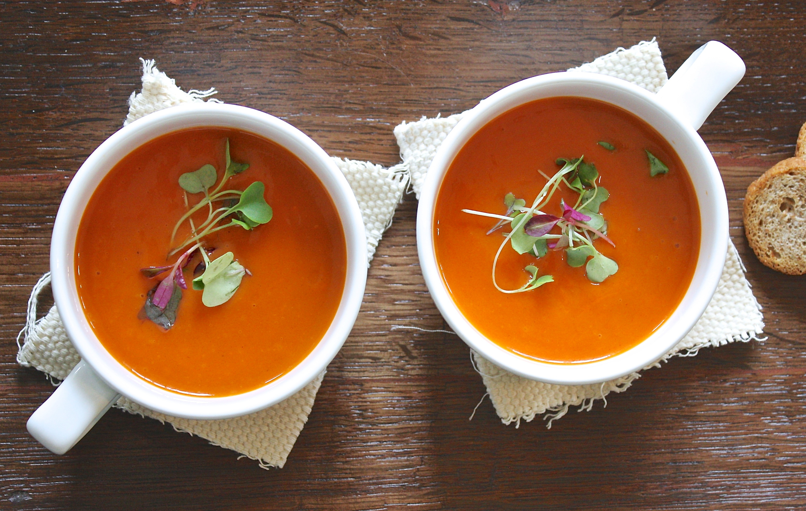
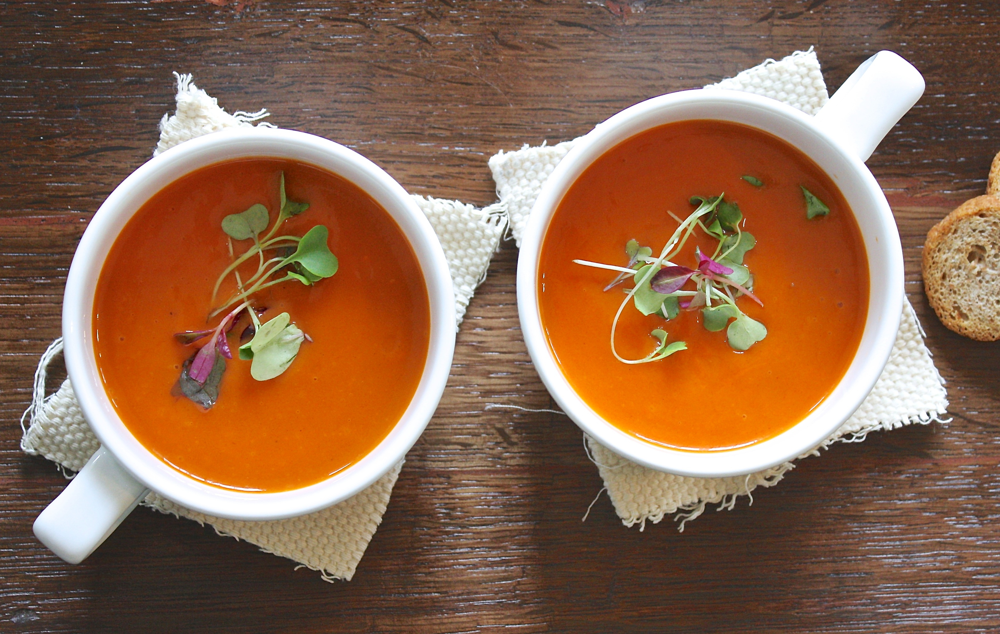

Menu restauracji Grota
Tu znajdziesz wiele wykwintych dań

Przekąski
Zupy
Dania Wykwintne
Zestawy Rodzinne
Dania Główne
Dania Rybne
Sałatki
Najpoje Gorące
Desery
Soki
Napoje Gazowane
Piwa Beczkowe
Piwa Butelkowe
Wódki
Wina
Koniaki i Brandy
Likiery
Drinki
Barmańskie Specjały
Carpaccio z polędwicy wołowej i bułeczki czosnkowe
Befsztyk tatarski z polędwicy wołowej z cebulką i ogórkiem
Smażony camembert z żurawiną i bułeczkami czosnkowymi
Paleta serów (5 gatunków sera)
Borowiki z patelni z tostami
Śledź w pierzynce
Śledź w oleju z przyprawami
Półmisek przekąsek: Kabanos, śledzie, dodatki konserwowe
Barszcz z krokietem
Krem borowikowy z grzankami
Szparagowa z grzankami
Porowa z grzankami
Pomidorowa z ryżem i makaronem
Żurek śląski
Polędwica po napoleońsku z wątróbką i pieczarkami, ziemiaki zapiekane, zestaw surówek
Polędwica po myśliwsku, ziemniaki zapiekane i zestaw surówek
Rolada śląska wołowa z kluskami i kapustą czerwoną lub zasmażaną
Rumsztyk wołowy z cebulką, zapiekane ziemniaki, surówka
Bryzol z pieczarkami, frytki, zestaw surówek
Kociołek a`la Grota z bułeczkami czosnkowymi
Polędwiczki wieprzowe w sosie kurkowym z kluskami i surówką
Pierogi ze szpinakiem i białym serem w pierzynce ze śmietany i parmezanu
Zestaw Rodzinny "Maximus": 4 Rodzaje mięsa Rolada wołowa, Rolada wieprzowa, pieczeń z karczku, pieczeń z indyka) 2 rodzaje klusek Kluski śląskie, kluski tarte 2 rodzaje kapust kapusta czerwona, kapusta zasmażana, a do wszystkiego pyszny sos
Zestaw rodzinny "TYTAN": 4 rodzaje mięsa z grila: szaszłyk, karczek, żeberka, skrzydełka, fura frytek, kasza kus kus, max surówek, pieczarki na gęsto i tzatziki
Rolada wieprzowa z kluskami i kapustą zasmażaną lub czerwoną
Pieczeń wieprzowa z kluskami i kapustą zasmażaną lub czerwoną
Kotlet po szwajcarsku, frytki, zestaw surówek
Kotlet schabowy, ziemniaki Purée, zestaw surówek
Karczek z grila, surówka i zapiekane ziemniaki
Żeberka z grila, frytki, zestaw surówek
Szaszłyk z grila, frytki zestaw surówek, tzatziki
De`volaille z frytkami, surówka
Roladka drobiowa z szpinakiem w sosie serowym, kluski, surówka
Pierś z kurczaka grilowana z boczkiem i serem, zapiekane ziemniaki i surówki
Gyros z kurczaka, ziemniaki zapiekane, tzatziki i surówka
Wątróbka drobiowa, ziemniaki Purée, buraczki
Placek po Węgiersku
Makaron Penne z borowikami i parmezanem
Makaron Penne z pomidorami i parmezanem
Spagetti Bolognese
Golonka śląska 10dag
Pierogi z mięsem i surówką
Pierogi ruskie z surówką
Pierogi z kapustą i grzybami, surówka
Gołąbki w sosie pomidorowym
Kiełbasa z grilla
Skrzydełka z kurczaka
Placki ziemniaczane
Filet z sandacza
Pstrąg z grilla
Sola w sosie śmietankowo-pieczarkowym, frytki i surówka
Filet z łososia z sosem żurawinowym, frytki i surówki
Filet z miruny, frytki i surówka
Sałatka z grilowanym kurczakiem, sałata lodowa, rukola, pierś grilowana, cukinia, papryka grilowana, cebula, pomidory, sosy
Sałatka wędzona z łososiem, Wędzony łosoś, sałata lodowa, rukola, kiełki, cebula czerwona, pomidor, sosy
Sałatka grecka, sałata lodowa, pomidor, ogórek zielony, ser feta, oliwki, świeża papryka, sos vinegret
Sałatka z szynką schwarwaldzką. Sałata lodowa, szynka, ogórek zielony, rzodkiewka, pomidory, grzanki, kiełki, sosy
Cappuccino z likierem
Kawa po Irlandzku
Kawa Cappuccino na mleku
Kawa Lavazza
Kawa Lavazza expresso
Kawa Cafe Latte
Kawa parzona
Czekolada na gorąco na mleku
Herbata Dilmah
Szarlotka na gorąco z lodami i bitą śmietaną
Lody z owocami i bitą śmietaną
Lody z bakaliami i bitą śmietaną
Brzoswinie z mascardone i bitą śmietaną
Deser kokosowy
Lody z owocami i bitą śmietaną
Koktajl lodowy
Kawa mrożona
Pomarańczowy
Jabłkowy
Porzeczkowy
Grejpfrutowy
Ananasowy
Bananowy
Pomidorowy
Coca Cola
Fanta
Sprite
Kinley
Woda mineralna
Nestea Ice Tea
Red Bull
Książęce złote przeniczne
Tyskie
Lech
Tyskie
Żywiec
Lech
Lech Bezalkoholowy
Peroni
Dębowe mocne
Grlosch
Żubr
Heineken
Okocim Karmi
Warka Strong
Redd's
Okocim Poema
Pilsner Urquell
Desperados
Wyborowa
Sobieski
Sobieski Vanilla
Sobieski grapefruit
Bols
Finlandia
Finlandia Cramberry
Finlandia Lime
Żołądkowa Gorzka
Krupnik
Żubrówka
Rum Seniorita
Becherovka
Rum Bacardi
Tequila Peppe-Lopez
Gin Seagrams's
Pitu Cachaca
Chivas Regal
J.Walker Red
J.Walker Black
Jameson
Ballantines
Grant's
Jack Daniel's
Cinzano
Martini
J.P. Chenet P/S
Tio De La Bota P/S
Carlo Rossi P/W
Crin Roja Wyt.
Grzaniec
Szampan Cin Cin
Napoleon
Vecchia Romangna
Stock 84
Metaxa 5*
Martell
Hennesy Fine
Malibu
Bols Blue Curacao
Passoa
Advocat
Bailey's
Campari
Marie Brizard
Sobieski Impress
SZÓSTY ZMYSŁ: wódka, grenadina,sok pomarańczowy bananowy grejpfrutow
SEX ON THE BEACH: wódka, passoa, sok pomarańczowy, porzeczkowy
CUBA LIBRE: bacardi, coca cola, cytryna
MARGERITTA: tequila, bols curacao, sok z cytryny
KAMIKADZE: bols, bols bluecuracao, sok z cytryn
CAMPARI ORANGE: campari, sok pokarańczowy, pomarańcza
CUD KARAIBÓW: wódka, malibu, sok porzeczkowy,sok jabłkowy
MALIBU: malibu, mleko
Tequila Sunrise: tequila, grenadina, sok pomarańczowy
PERFECT MANHATTAN: whisky, wermut biały,czerwony,cytryna, lód
CZERWONY CUD: whiski, grenadiny, sok bananowy, sok z cytryny
Grotołaz: wódka, malibu, blue curacao, bitter lemon
Punkt G: wódka, blue curacao, sok pomarańczowy
RED NIGHT: finlandia redberry, sok porzeczkowy, sprite, lód
CAIPIRINIA: cachaca, cukier brązowy, kruszony lód, limonka
Mojito: rum, syrop, cukrowy, woda gazowana, limonka, mięta
BMW: baileys, malibu, wódka
Pina Colada: rum, malibu, sok ananasowy, mleko
ICE DREAM: wódka, Advocat, Lody waniliowe, mleko

 
